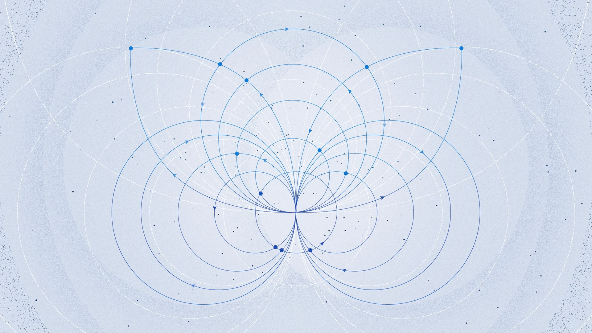
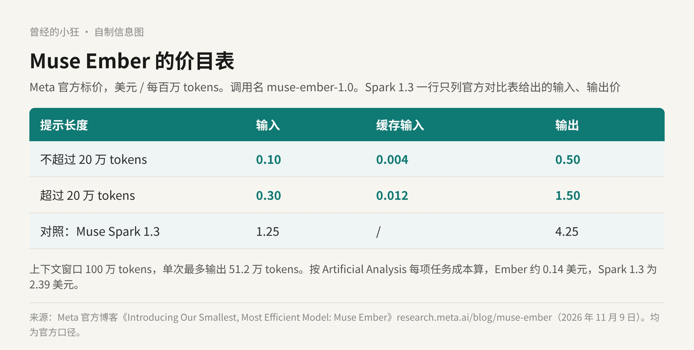
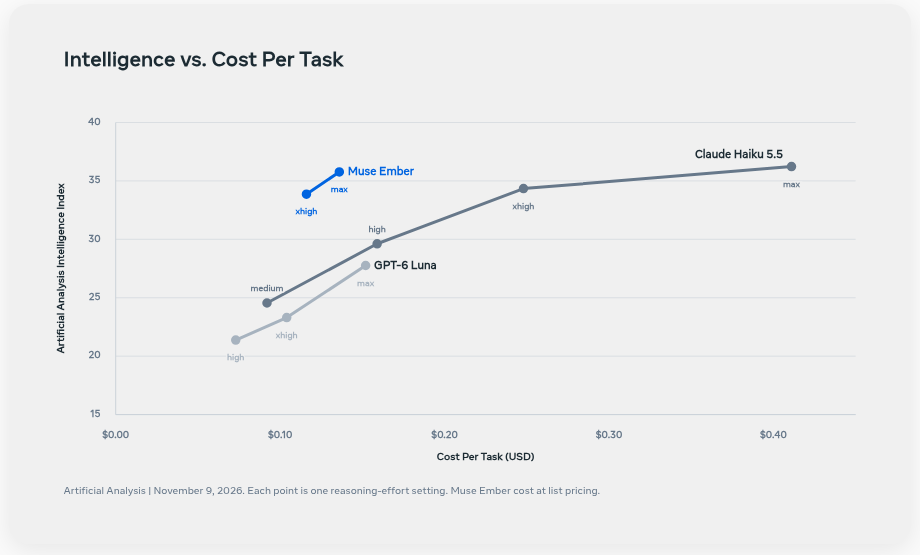
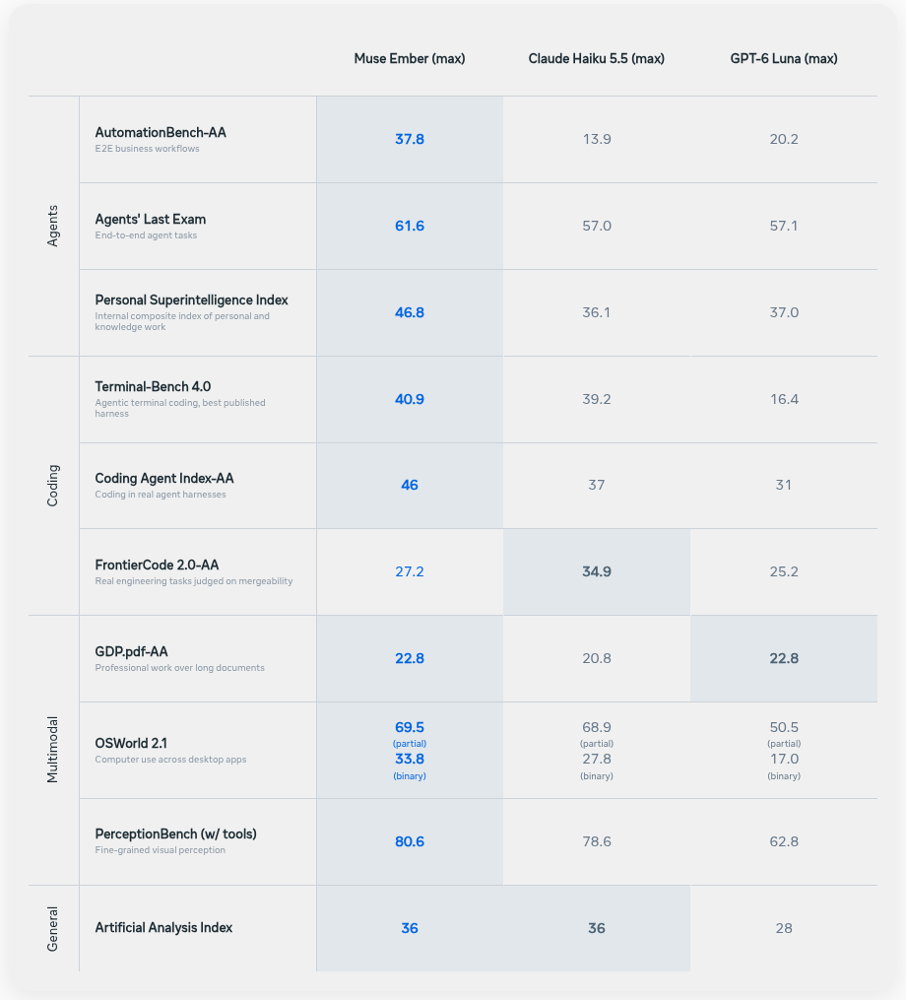
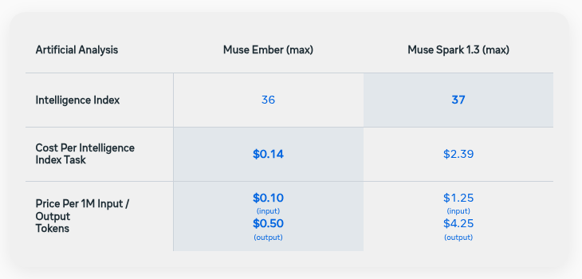

一个 Agent 跑完一次任务，真正在「想大问题」的时间其实不多。更多的 token 花在一堆小步骤上：读文件、调工具、跑测试、抽字段、把一条记录从这个系统挪到那个系统。
Meta 在 11 月 9 日发布的 Muse Ember，就是冲着这些小步骤来的。官方的定位是 Meta 目前最小、最高效的模型，专门接 Agent 整天重复的那些活：工具调用、编码子任务、路由、信息抽取和长文档解析。

Meta 官方博客《Introducing Our Smallest, Most Efficient Model: Muse Ember》头图。图片来源：research.meta.ai/blog/muse-ember
Ember 的看点首先是便宜。官方标价是每百万输入 token 0.10 美元、输出 0.50 美元，缓存输入每百万 0.004 美元。这是提示不超过 20 万 token 时的价格；提示更长，就按输入 0.30、缓存输入 0.012、输出 1.50 美元计，三项都是原价的三倍。
它在 Muse Code 和 Meta Model API 上都能用，调用名是 muse-ember-1.0，支持 Responses API。上下文窗口 100 万 token，单次最多输出 51.2 万 token。官方博客还提到，Muse Ember、Muse Spark 和 Muse Wonder 现在也上了 Google Cloud 和 Oracle Cloud。

自制信息图：Muse Ember 两档价格，与 Muse Spark 1.3 的输入、输出价对照。数据来自 Meta 官方博客，均为官方口径。
拿自家的 Muse Spark 1.3 比一比更直观。官方对比表里，Spark 1.3 每百万输入 1.25 美元、输出 4.25 美元；换句话说，Spark 1.3 的输入价是 Ember 的 12.5 倍，输出价是 8.5 倍。
Meta 这次最想让人记住的一句话是：Ember 每花一美元换到的智能，比 Claude Haiku 5.5 和 GPT-6 Luna 在任何推理档位都多；它以大约三分之一的成本，追平了 Haiku 的最好成绩，并且胜过 Luna 的每一个档位。官方还说，在 Artificial Analysis 的完整榜单上，Ember 处在效率前沿：没有哪个模型能用更少的每任务成本拿到更高的分。
这张图值得多看两眼。横轴是 Artificial Analysis 上每完成一项任务的成本，纵轴是 Intelligence Index。

官方图表：Artificial Analysis 智能指数与每任务成本，每个点是一个推理档位。图片来源：research.meta.ai/blog/muse-ember（数据为 Artificial Analysis 2026 年 11 月 9 日结果，Ember 按标价计成本）
按图里的数据：Ember 在 max 档拿到 35.8 分，每任务约 0.136 美元；Haiku 5.5 的最好成绩是 max 档 36.2 分，每任务约 0.411 美元。0.136 除以 0.411，差不多正好三分之一。
所以官方说「追平」，我更愿意读成「很接近」：分数上 Ember 还差 0.4 分，但成本只有三分之一。GPT-6 Luna 的最高档是 27.8 分，每任务约 0.152 美元，比 Ember 贵一点，分数却低了一截。
官方给了一张更完整的成绩表，三家都开到 max 推理档。Ember 赢的地方不少：
Agent 类：AutomationBench-AA（端到端业务流程）37.8，Haiku 13.9、Luna 20.2。Agents' Last Exam 61.6，另外两家都在 57 上下。
编码类：Terminal-Bench 4.0 是 40.9，Haiku 39.2，Luna 16.4。这一项各家用的是自己公布过的最好 harness：Ember 用 mini-swe-agent，Haiku 用 Claude Code，Luna 用 Codex。Coding Agent Index-AA 是 46，对 37 和 31。
多模态：OSWorld 2.1 桌面电脑操作按部分得分是 69.5，Haiku 68.9，几乎打平。长文档 GDP.pdf-AA 是 22.8，和 Luna 持平。

官方评测成绩表：三家模型都在 max 推理档，每行加粗的是该项最好成绩。图片来源：research.meta.ai/blog/muse-ember
但也有一项输得很明显：FrontierCode 2.0-AA，按「改动能不能被合并」来判的真实工程任务，Haiku 5.5 是 34.9，Ember 只有 27.2。综合的 Artificial Analysis Index 上，Ember 和 Haiku 都是 36，Luna 是 28。
还有一点得说在前面：Agents' Last Exam、Personal Superintelligence Index、OSWorld 2.1 和 PerceptionBench 是 Meta 自己的内部评测，其余标了 AA 的来自 Artificial Analysis。读这些数字时，内部评测那几项打个折扣看更稳妥。
合作方的早期测试也偏向同一个方向。Cline 创始人 Saoud Rizwan 说，Ember 就是为子 Agent 的活专门打造的，比如编码和文档分析，而且干得很好。Cloudflare CTO Dane Knecht 提到，它的尾部延迟比他们测过的同类模型快到 30%。
把这些信息放在一起，Ember 适合接的活就比较清楚了。
子 Agent。主 Agent 想好了要做什么，把「读这几个文件」「跑这组测试」「改这一处」分发出去。官方的原话是，这类编码子任务 Agent 一个会话里要派出去上百次。
批量的结构化步骤。按顺序调工具、拉记录、跨应用更新系统；路由和分类；从合同、简历、报表里抽字段。
吃长材料。100 万 token 的上下文能一次塞进整个代码库或一整套文档，而且它原生能读文本、图片、音频和视频，截图、图表、扫描件、会议录音都不用另配模型。只是别忘了，提示超过 20 万 token 后单价会翻三倍。
最难的那一步，比如拆解问题、定方案。官方自己的搭法就是：最难的问题配上 Muse Wonder，Wonder 负责规划，Ember 负责扛量。Ember 本身也是 Meta 第一个用 Muse Wonder Full 训练出来的模型。
要直接能合并的工程改动。FrontierCode 2.0 那一项的差距说明，真到「这段代码能不能进主干」的层面，小模型还差一截。
至于 Ember 和自家 Spark 1.3 怎么选，官方表上 Intelligence Index 是 36 对 37，每项任务成本是 0.14 美元对 2.39 美元，差了大约 17 倍。官方给三者的分工是：Wonder 接最难的问题，Spark 做编码和 Agent 工作流，Ember 负责可重复、规模化的编码和 Agent 任务。

官方对比表：Ember 与 Spark 1.3 都在 max 档，智能指数相差 1 分，每项任务成本相差约 17 倍。图片来源：research.meta.ai/blog/muse-ember
一分的智力值不值 17 倍的钱，答案在你自己的任务里。我的做法会是：先把流水线里最重复的那一段换成 Ember，留着大模型盯规划和最后的检查，跑一周看看质量掉没掉。
安全上，Meta 说 Ember 发布前按 Meta Superintelligence Scaling Framework 做了化学生物、网络安全和失控风险评估，各项都低于框架的高风险阈值；小模型也做了同样的核心安全训练，并测了它替用户行事时会不会抵抗网页、文档、工具输出里藏着的指令，高影响操作前会不会先找人确认。
过去选模型，大家习惯问「哪个最强」。Agent 跑起来以后，问题变成了「每一步该派谁去」。Ember 不是要当最聪明的那个，它要当那个干得最多、最不心疼钱的。
来源清单：
https://research.meta.ai/blog/muse-ember